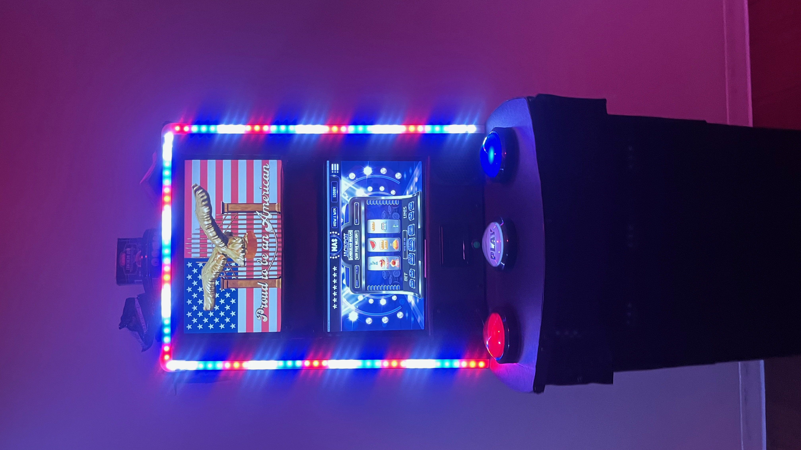

Experience Designer, Game Writer, Graphic Designer, Lead Programmer, Object Designer
Slot machine to counteract gambling addiction by infusing US citizenship test into slot’s gameplay, designed for American Dream Casino created by Robert Farid Karimi. The original slot machine designed for DNA workshop in December 2024 was made for laptops and playtested by audience members. In 2025, Karimi received a residency at UC San Diego Jacobs School of Engineering at the Anthropology, Performance and Technology Lab. Karimi worked with student to develop the machine’s buttons and chassis. They worked with AR/VR expert Steve Lukas (Qualcomm/Magic Leap) to create a US Citizenship test to “wake up” gambler from the act of pushing the button in a zombie-like way. The test also served the dramatic elements of the experience and added to the idea that the casino served as a US immigration center of the future.
The photos (counterclockwise from left) feature the final slot machine, the 2024 playtest, and a day working with Jon P. Wade, Professor Practice, Mechanical and Aerospace Engineering and former executive vice president of Engineering at International Game Technology (IGT) – the largest slot machine company in the world, who dove deep into the emotional design that had to be disrupted in order to reverse a slot machine’s addictive qualities
